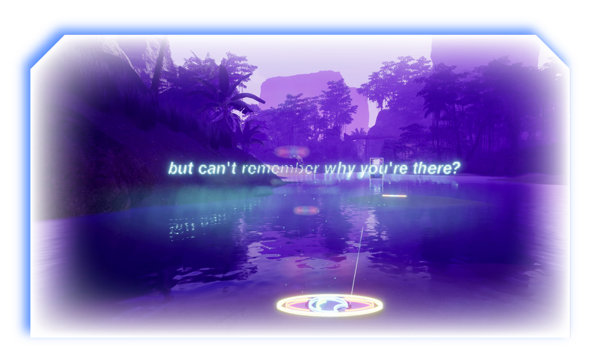
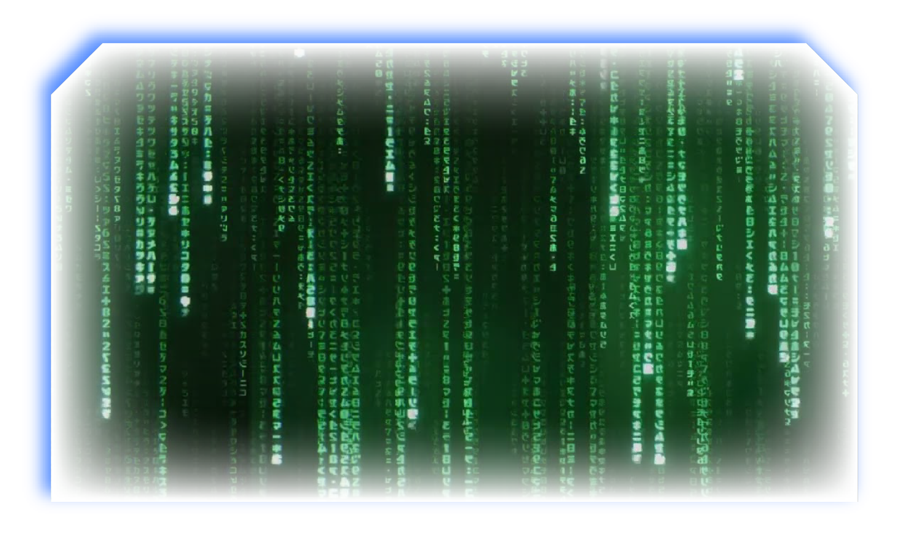
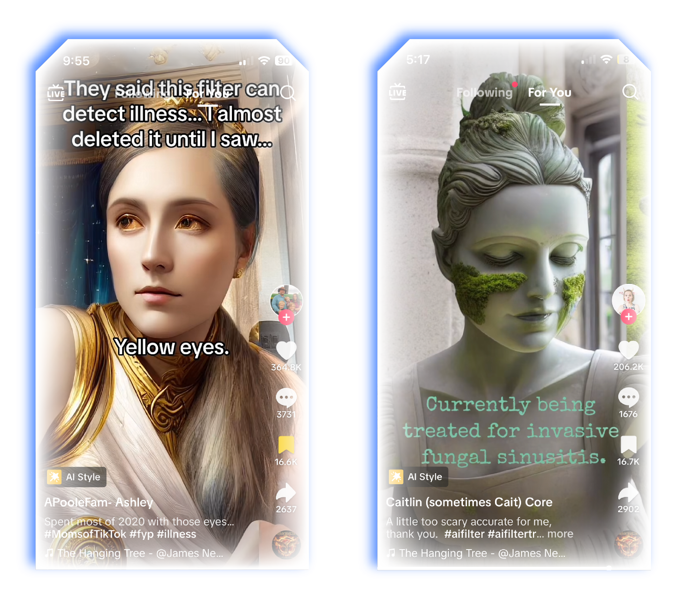

Thanks to Frank Carber for being willing to bounce ideas off of and so graciously sharing yours.
I stare blankly into my selfie camera while a recording of a sounding bowl plays. The audio clips weakly through my broken speakers, so it seems unlikely that the supposed healing frequencies are “unblocking my root chakra and allowing for financial prosperity to flow.” Regardless, a TikToker has somewhat convinced me that filming myself will help pay my rent, whereas skipping this opportunity will result in a generalized, unspecified disaster. After, the algorithm serves up another similarly premised proposition. Then again. And again, until it decides my ideal scrolling experience is dominated by videos telling me to put my faith, future, and well-being into recording myself to a roster of short, reverbed-out audios.
Before their complete domination of my For You page, these prophetically aspirational, deterministic, new-agey threats were sandwiched among uncanny references to my life, ranging from videos about the types of students who attend each Denver (my hometown) high school or the best gay (me) clubs in the beach town I’m about to visit. These, although intimate, don’t strike me as odd anymore. I’m accustomed to the algorithm’s precision: it’s old news that our phones seem to know us in a scarily deep way.
Operating on a gigantic scale at imperceptibly quick speeds, TikTok’s algorithm (at least to my small fleshy brain) appears to be a transcendental force, surpassing the limits of human perception and cognition. I'm shown video after strikingly-accurate-to-my-life video, with no room for thought in-between. Each has tens of thousands of likes. The messy code is tucked away behind a hypnotizing, oracular UI. The information delivered emanates quickly and seamlessly from the screen. What's more, TikTok, and its other corporate contemporaries, are notoriously cagey about the mechanics that drive their algorithms. As the user, I’m prompted to believe that the algorithm is all-knowing, all-seeing, and smart. Awe-inspiringly smart. Effortlessly omniscient. It captures me, it knows me. But I only have vague contours of its method.
At their most basic, however, “algorithms” are simply logical sets of instructions stacked together to create a cohesive program. Computer bits are flipped on or off, and the rest is built from there. If x (user likes a manifestation video), then y (show them more forever). These rules underpin all computerized tools, from a washing machine timer to a plane’s autopilot. Yet the term has become synonymous with recommendation algorithms. The numerous, secretive, inaccessible programs that select what social media serves up to us coalesce under the banner of the Algorithm.
In the Algorithm’s shadowy complexity, its role as a mundane, simple rule follower is lost. With a general cultural resignation to recommendation algorithms' eerie power—it’s borderline hackneyed to note when you get an ad for a product you were just talking about—these spiritual TikToks raise the stakes further, implying an even more paranoid proposition. A proposition rooted in the nagging belief that the Algorithm is too powerful to be just a simple computer program. It proposes that the Algorithm might actually be able to prophesize and influence my fate. So, I obey, and click record, just to be safe.
Adapting Kant, media theorist Vincent Mosco offers an explanation for the inclination to transform the Algorithm's seemingly knowledgeable illegibility into an ineffable, spiritually resonant force. He dubs this modern experience of unknowable and pseudo-religious mechanical scale the digital sublime, a feeling that arises from machinery that “achieves transcendence through astonishment, awe, terror, and psychic distance.” Contact between the individual and the Algorithm operates at that same psychic distance; everything behind the screen is too abstract, too large, and too secretive to understand. Logic and reason are replaced with awe.
Tellingly, public discourse rarely attempts to untangle awe from algorithmic logic. Congresspeople blindly stumble around, cluelessly attempting to probe its machinations. A New York Times piece heralded its cold, binary calculations as the “prevailing spirit across multiple cultural domains.” It’s even been blamed for economic crashes. With Berkeley professor Morgan Ames’ explanation that society operates under the “impression that many algorithms are ‘black boxes’ with little hope for supervision or regulation” in mind, the Algorithm is seen as akin to a tamable (super)natural phenomenon, rather than a man-made tool. It can’t be reached into, adjusted, or reconstructed. Instead, like a force of nature, it is submitted to and—if the user is adept enough—handled.
The sublime awe of TikTok’s algorithm drives me to continue recording an embarrassingly large fleet of videos in hope of accessing its promised rewards. My favorite claim is that I will have the best dinner of my life tonight if I “use” a slowed-down Coldplay song. So long as the black box keeps the Algorithm’s logic at a ~mystically inaccessible~ distance, it is able to maintain its spiritual appearance. For this to work, however, the logical interior of the black box cannot be exposed. The computer, if we are to believe in its power, is working on a higher plane than humans. Even if I were given a glimpse into its workings, the Algorithm’s mythology maintains that I would never understand.
Originally, I hoped to break down the TikTok paranoia and expose the black box’s simplicity. But, to be honest, I’m finding it hard to do. These TikTok spiritualists offer a simple and effective algorithmic proposition—fear/hope is used to bait users into interacting with the video, which, in turn, increases the likelihood the video is pushed to both the user and others. Effectively, it’s operating in the same way as 2000s chain mail. The videos are especially reminiscent of the dubiously formatted viral warnings that allegedly protected Instagram accounts from getting deleted circa 2012–14. Both trends take a stab at parsing the secret code of an obscured algorithm. Users, hopeless and lost in the Algorithm’s shadow, blindly throw darts at the wall, attempting to harness its power for their own benefit.
I’m trying to think of how to classify the rewards I’m promised. They’re all drawn from the same pre-professional, aspirational well: I will get accepted to grad school, find a husband, get a raise, and my mom will buy me Starbucks. Asking others, I find many FYPs are plagued by similar videos mildly tailored to their specific anxieties. The videos chosen for me focus on success (I’m unemployed), a friend who recently went through a break-up is served up videos on how to “restore her beauty,” and an acquaintance's high-school-aged younger sister’s are supposed to improve her grades. Regardless, they all seem to echo a similarly genie-esque incentive for “using the sound.” There is no promise of intangible spiritual well-being or nirvanic that one might expect from supplicating to a higher power. Rather, they center around accruing capital. Making yourself a more desirable citizen, consumer, girlfriend, student, etc.
The rewards are the logical conclusion of a well-lived life, as judged by our current society and the market. The Algorithm’s computerized, calculating underpinning allows no imagination in its mysticism. The promise of an unrealized future and the possibility of meaning beyond the current, hierarchized systems is absent from this wholly digital belief system. Even in its mysticism, then, the Algorithm’s spirituality—thanks to its rule-based underpinnings—cannot escape an implicit commitment to a traditional, linear, and computationally rational logic. By nature of the digital, computers are designed to logically reason a response to inputs rather than allowing for an awesome mystical unknown.
Computers, operating on a conclusion-centric, rationalized, and knowable framework are unable to prophesy in a meaningful way. Analysts by nature, computers deal in probabilities, rather than “visionary” prophecies. When attempting to fit the spiritual into computers’ encoded and hierarchized structure, spiritualism becomes a reflexive repetition of already entrenched structural values and thought patterns. Rather than existing as an entity beyond human understanding, computers have simply made human logic and knowledge appear mystical by taking it to the nth-degree.
Here, looking at the structure of the machine, we can see what writer Erik Davis—in his book Techgnosis: Magic, Memory, and the Angels of Information—calls the “hierarchies of code” in which “higher-level programming languages [descend] into the decidedly unnatural machine language of ones and zeros.” Bits can be on/off, 1/0, or true/false, but they cannot calculate the unknown: algorithms are designed to have both an answer to every question and a logically traceable workflow used to find it. An algorithm, by definition, is a strict rule-follower. It is, by design, mathematical, binary, and, most importantly, rational. Yet, Davis reminds the reader that traditionally, spiritualism negates this solely rational framework: “from the oracles at Delphi to the table-rapping of the nineteenth century, spiritualism has long been the most immediate yet controlled mode of nonrational communication, at once technically structured and visionary.” With the Algorithm’s pruning of the “technically structured and visionary” to just the “technically structured,” imagination outside of current social formations is discarded.
Structure, in other spiritual traditions, attempts to expose, or glimpse an unknowable, universal, infinite, and irrational truth. On the other hand, algorithmic logic presupposes a knowable, achievable, finite, and teleological truth. Rather than forms—such as language—approximating or revealing portions of truth, the encoded structure of computers claims to both totally represent and create truth.
In a world where an infallible, godlike Algorithm is able to see, to know, to compute, and to create—even beyond human understanding—the possibility of change and originality is forgotten. If an alternative were possible, the Algorithm would have calculated it already. Instead, it appears that we have concluded progress. It is a reflexive proclamation emanating from inside its own structure that our current systems are True. A deification of the Algorithm asks you to accept that the G-Wagon, the Ivy League degree, multiple homes, and millions of dollars are the ultimate rewards.
In reality, The Algorithm is a mundane, deeply human, and constructed system that is heavily influenced by the environment it was built in. Its conclusion-centric, rule-following nature precludes the possibility of a visionary future, a future that is mystical not because it is godly, but because it allows for indeterminacy and change.
Sadly, unseating The Algorithm’s mystical perception is almost prohibitively hard in our current algorithmic landscape. Rather than mundane rationality being the downfall of this spirituality, it is neatly folded into its credibility. A unique doublethink is bred. The computer probably isn’t wrong (it’s a glorified calculator!), I’m just missing some spiritual truth it’s picked up on. When the black box is introduced, a combination of impenetrable structures and apparent super-intelligence sells the Algorithm as all-knowing. We mere mortals cannot compete.
Written by thousands of engineers over many years and based on allegedly impartial, mathematically precise underpinnings, The Algorithm’s locus of intent becomes difficult, if not impossible, to identify. Authorless, unwieldy, and lacking a clear genealogy, it takes on a dispersed life of its own. Rather than a singular voice espousing a specific viewpoint, it is seen as simply amassing, interpreting, and dispensing information. It then follows—for groups ranging from the most computationally enlightened to Luddites to zoomer spiritualists—that attempting to parse the algorithmic black box’s actions becomes a fertile ground for the extraction of some universal truth, rather than a reflection of its creators and context.
At this extraction site, the rationale behind the Algorithm’s actions becomes a popular focus of inquiry—even in its error. TikToks often claim the algorithm brought users—from LGBTQ+ equestrians to future cookie shop employees—to a specific video for a reason.
In a move reminiscent of this logic, a group of TikTokers claimed an AI filter was able to “detect” disease. One woman cites the yellow eyes the filter gives her as proof that it knows about her liver disease. Her skeptical shrug at the beginning of the video is replaced by the near-tears face of a new believer in the power of the algorithm. Another claims that the moss growing on her face is the filter “scarily” picking up on her fungal sinusitis. Interestingly, the emotionality of these videos is not drawn from the diseases these people suffer, but from the confirmation that the algorithm knows about it.
It is widely speculated (although not confirmed) that TikTok uses a Generative Adversarial Network (GAN) to power these filters. Like other AI algorithms that rely on large inputs of data, GANs utilize swaths of preexisting images to develop its outputs. If you showed it a million cat photos and then asked it to draw a new one, the robot would use what it's seen to make something totally new, but still cat-like.
Based on its outputs, this filter was likely given a dataset of digital artwork to learn from—specifically golden humanoids and mossy statues. It then interprets images of the users in the style of that dataset: hence, the mossy checks or golden eyes. TikTok doesn’t reveal this process to the user, however. So, the gold bangles, toga, and granite skin are ignored by these users, who instead focus on informationally rich areas, affirming the user’s latent belief in—or desire for—an infinitely knowledgeable algorithmic reasoning. The GAN recedes into the background, leaving room for the mystical Algorithm.
In a circular move, rather than the Algorithm being inhabited by or standing in for a greater spirit, universal truth is both derived from and created in its structure. In TikTok’s case, this often manifests as the Algorithm reifying itself and the techno-rationalist ideology under which it was built. TikTok knows I have liver disease because I went in believing in its power to know that—diagnosed or not. And the emotion felt
seeing the algorithm identify the disease is from awe at its power, rather
than a revelation delivered from on high.
This wholehearted belief in the Algorithm as a perfect mirror—or even a constructive force—for reality is the final, most dangerous shift it makes. As our digital environment scales up, some turn to complexity theory—an ideological attempt to rationalize, codify, and systematize the world—and computational models to describe societal workings. These mock-naturalistic, divine incarnations of technology replace the older, ineffably infinite conceptions of the universe. Pairing black box inaccessibility with a societal belief in an infallible, universal enlightenment rationalism expands the Algorithm’s domain to, well, everything.
In this vein, many TikTokers claim that the natural universe acts algorithmically, or, in some cases, as an algorithm: the rational Algorithm was present at creation and our existence is simply its byproduct. One video gives a birds-eye view of a neo-futuristic CGI city—in a style that is very early ‘aughts—as a disembodied deadpan voice likens our lives to “data points” for this universal algorithm. Although positioned as helpful information, the mildly dated animation style paired with the deterministic message creates a bleak image. With a different tone, it could be a warning from the beginning of the algorithmic age, circa 2005. Another man, with widened, almost fearful eyes, warns that the Algorithm will “optimize” your life in accordance with the data you feed it.
Returning to Mosco, he identifies this world-encompassing structure as another force of the digital sublime, where metaphor can “animate a technology by lifting it out of the world of prosaic machine parts…Just as the universe that Newton described came to be viewed as a great clock, subject to the mechanics of a set of interchangeable machine parts, today’s universe is increasingly seen as the computer writ large.” As the world transfers its bulk to the digital sphere, digital gods and digital cosmogonies have risen to replace older humanistic and naturalistic ones. But there are critical differences between the Algorithm and an algorithmic god. Inherent to the sublime fear ushered in by technological deification, the human-constructed nature of cyberspace, and the Algorithm, is effaced. In simplifying the universe to a man-made, semi-understandable algorithm, an ideology that turns away from mysticism and towards rationality in spiritual practice betrays an emergent tendency of the algorithmic age: an abandonment of imagination and an acceptance of the end of history.
There is little hope in the Algorithmic universe: the videos instead appear almost as warnings for navigating our algorithmic reality. The users are again left at the mercy of an unfeeling and calculating algorithm. This time, however, it extrapolates out to all of existence. If we are to believe in the Algorithm’s prophetic power, maybe it did calculate a conclusion—that we’re either living in or chugging towards—circa 2005. An analog, nuanced experience is reduced to True/False, Success/Failure, and Probability/Imagination. The rewards promised by the Algorithm are no longer just rewards, but standards: harness the Algorithm correctly and it might compute the correct output. And the prophecies are not visions into the future, but probable predictions: there’s no unexpected hope or room for change, it’s a view down the track we’re already on.
Continuing to clock in and record a barrage of spiritually charged six-second videos, my scrolling becomes reminiscent of a factory line. The associative, aimless promise of a networked web is negated by the endlessly linear productive rationality of the scroll. One video following the next in unyielding uniformity, this amorphous spirituality appears to have calculated a conclusion that does away with the mystical unknown. Seeing as we’ve already reached the conclusion, there is no end to the scroll. There is only Now, infinite not in its possibility but in its duration.